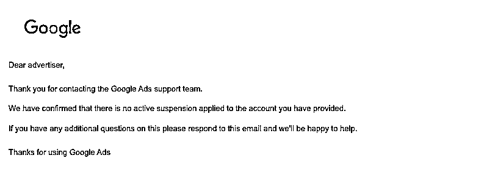
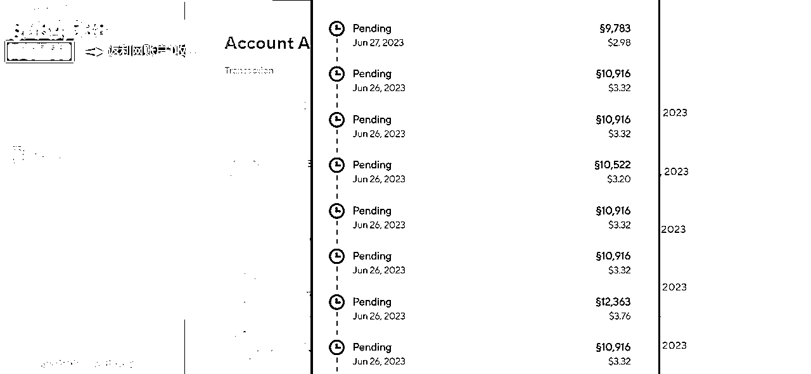

来源：https://viuejh8h99y.feishu.cn/docx/Bj97d7CKWoyEJKx6PsQcurEfnMc
做GoogleAds的朋友们，你可能正在为广告账户被封而感到焦虑或头疼，根据我3个月的实操经验来看，这中间有一些小窍门儿、有一些“讲究”，可以分享给大家。
Google是全世界公认的最大搜索引擎，以下这段话，来自于chatGPT。
Google是目前全球最大的搜索引擎之一。自从1998年成立以来，Google一直处于搜索引擎市场的领导地位。凭借其强大的搜索算法和广泛的搜索索引，Google提供了高质量的搜索结果，并以用户友好的界面而闻名。此外，Google还推出了许多其他产品和服务，例如Gmail、Google Maps、YouTube等，使其成为一个综合性的科技巨头。尽管也存在其他竞争对手，但Google在搜索引擎领域的市场份额仍然占据着主导地位。
在搜索引擎领域，Google依然占据着市场主导地位。特别是在国外，老外们非常依赖搜索引擎，也就是说他们非常依赖Google。
作为行业的标杆，Google自然而然也吸引到了非常多的人，在它上面投放广告，也就是我们很多跨境老板熟悉的GoogleAds。当然，作为行业标杆，Google也非常傲娇，这样的傲娇，一来源自于它的专业，二来源自于他的支持团队。就GoogleAds而言，会有很多的政策，来规范广告主、流量主、用户的使用。
以下这段话，同样来自于chatGPT。
GoogleAds通过一系列政策来规范广告主、流量主和用户的使用。以下是其中一些重要的政策：
这些政策的目的是确保广告生态系统的健康运作，为用户提供高质量、安全和有价值的广告体验。广告主、流量主和用户需要遵守这些政策，以确保他们在GoogleAds平台上的合规操作。
OK，这篇文章的第一部分，就是和大家分享Google的傲娇。它的傲娇，会让通过GoogleAds花钱or赚钱的人们又爱又恨。但是，这样的巨头，每时每刻都在迭代，来维护他们生态的稳定，毕竟单单这样一个搜索引擎，每一年就能够给Google公司带来巨大的创收，并且还能够通过这个搜索引擎，无限延伸！
好的，那么我们来进入正题吧！无论你是做mediabuy也好，还是做Google Cash也好，只要你是通过Google来投放广告，你都离不开GoogleAds。这篇文章，我们不去针对广告主分析GoogleAds的封号，我们针对Affiliate们，来聊聊广告账户被封之后的一些“经验之谈”，希望可以对你有所帮助！
当然，对于很多人来说，Affiliate Marketing相比于国内很多的项目，仍然属于一个小众的项目。哪怕在生财这样一个项目满天飞的星球里，它依然不那么起眼。但是不可否认的是，这样的一个项目，早已稳定持续了十几二十年，并且仍在稳定运行中。这个行业中的大佬们，仍然可以稳定地日入万刀甚至更多。
但是，这都有个前提，那就是要看Google脸色。（如果你是跑的Facebook广告，你自然要遵守Facebook平台的规则，其它平台，同样如此）
虽然入行3个月时间，但是在前面的文章分享中，也提到了我的一些看法、一些感触和一些收获。
很多新手，在GoogleAds中，都会遇到的一个问题，那就是Google广告账户被封，比如这样：
Circumventing systems policy——规避系统政策
或者是这样：Counterfeit goods policy——仿冒产品政策
也有像这样：提示你“不可接受的商业实践政策”。

通常新人刚刚遇到，会比较抓狂，有人骂Google、有人怪运气、还有人通过各种方式查找原因，想办法申诉解决，什么样的人、什么样的表现都会有。不过，在这个行业沉淀一段时间之后，就会发现：Google会不定时地更新他们的政策或者是审查力度，对于这个行业的大佬们而言，这种情况早已经是家常便饭。
①就是想单纯看看，这是不是机器人在操作，因为正常人操作的广告账户，会定期查看，发现被封会及时申诉；
②你的广告确实有地方违反了广告条例，无论是标题、描述还是品牌等等原因；
③别以为“仿冒产品”，就真的是因为你跑的offer是“仿牌”或“假货”，这只是一个“原因”而已，换一句话来说，这只是Google的一个说辞。无论哪种原因，对应去申诉即可；
④通常情况下，“仿冒产品”的封号，比“规避系统政策”的封号，更好申诉回来，一般“仿冒产品”1天内能申诉回来，而“规避系统政策”可能3天、5天，或者申诉1次、2次都回不来；
⑤对应的一些offer问题，简单举个例子：可能做跨境的老板们，都知道沿海某个地区，做仿牌非常厉害，比如做Adidas或者Nike的仿牌，那么Google如果看到你是亚太区的代理商开的广告账户，哪怕你真的在跑Adidas官网的offer，一样也会给你封号。这个原因，我们就讲到这里不延展了；
⑥有时候Google政策或者是技术上的更新，会在某一个时间段里大批量封号，这个影响不止是某个人、某个地区。当然，通常情况下，老的广告账号，会比新的广告账户“抗封”一些；（什么是老账号呢？申请开号时间更早一些，以及账号花费广告费更多一些的）
①前面提到过，在大佬们看来，广告账户封号是家常便饭，一个MCC账户下面可能30个广告账户，有20个都被封了。那么，是需要集体申诉吗？——并不建议；
②经过这3个月来的实战经验，千万不要在某一时间段集中申诉10个、20个账号，这很容易导致一个结果：一个账号也回不来；
③今天写这篇文章，也是最近申诉回来了好几个账号（如下图所示），而我的“窍门儿”，就是隔10多20分钟，申诉一个账号。如果这中间时间有空闲，那你可以看看别的广告账户，或者是看看别的环境里（也就是其它的上广告线路，毕竟上广告的人，一般都有好几个环境）是否有需要申诉的账号；
最近几年，随着大环境的变化，越来越多的人，想要在工作之余找点儿副业或者是项目来做。当然，也有不少朋友，就是在不断地做项目。
从GoogleAds广告账户被封的一系列应对来看，其实我们无论做什么项目，都需要具备一定的基本能力，比如：
所以，我也是从上述这些GoogleAds各种问题中，走到了现在。每天也在稳定拿到收益和结果（简单晒点儿每天的小成绩吧）

账号还比较多，这里就不一一放截图了。返利网这边，操作的方式就是多号并行，然后定时更换追踪链接即可。建议：最好单个返利网的佣金不要超过300美金。（因为很暴利，因为广告主可能会不定期查业绩）
当然，网盟这边的限制就没有这么多，像这个网盟，还算是二级网盟，每个月的佣金同样比较稳定，一样可以多号并行。这些收益，仅仅是“班门弄斧”，比起业内的大牛，还相距甚远，依然虚心学习！
每个行业都有大神，而每个行业也有一些难题，是需要沉下心来解决的。小白到大神，总会有一段时间、一段坎坷的路要走。但是没有谁是天生的大神，更没有谁能够不劳而获。在后面的文章里，我也愿意根据实操，分享更多返利网账号、网盟账号以及各种Affiliate Marketing账号被封之后的应对与申诉经验和干货。